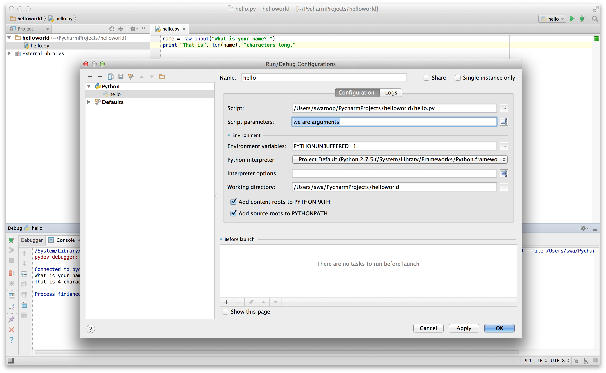

مبانی
فقظ پرینت کردن hello world کافی نیست، درست است؟شما می خواهید کارهایی بیش از این انجام دهید - می خواهید مقداری ورودی دریافت کنید، آن را پردازش کنید و در نهایت از آن خروجی به دست آورید. در پایتون می توانیم با استفاده از ثابت ها و متغیر ها این هدف را کسب کنیم و همچنین در این فصل با مفاهیم دیگری آشنا خواهیم شد.
توضیحات
توضیحات متونی هستند که در سمت راست نماد # قرار می گیرند و بیشتر برای ارائۀ نکات و یادداشت ها به خوانندۀ برنامه مورد استفاده قرار می گیرند.
برای مثال:
print('hello world') # یک تابع است print توجه داشته باشید
یا:
#print یک تابع است
print('hello world')
برای توضیح موارد زیر تا حد امکان از توضیحات مفید استفاده کنید:
- فرضیات
- تصمیمات مهم
- جزئیات ضروری
- مسائلی که سعی در حل آن ها دارید
- مشکلاتی که در برنامۀ خود در تلاش برای برطرف کردن آنها هستید و موارد دیگر
Code tells you how, comments should tell you why.
این موضوع برای خوانندگان برنامۀ شما مفید است، زیرا می توانند به راحتی متوجه شوند برنامه شما چه کاری انجام می دهد.
در نظر داشته باشید، که آن فرد ممکن است خود شما، شش ماه بعد باشید!
ثابت های تلفظی (Literal constants)
مثالی از یک ثابت تلفظی عددی مانند 5, 1.23 یا رشته ای مانند '!This is a string', "It's a string" است.
به آن لفظی گفته می شود چون دقیقا همان لفظی است - زیرا مقدار آن را همانگونه که هست استفاده می کنید. عدد 2 همواره بیانگر خودشاست و نه چیز دیگری؛ این یک ثابت است زیرا مقدار آن غیر قابل تغییر است. بنابراین، تمام این موارد ثابت های تلفظی نامیده می شوند.
اعداد
اعداد عمدتاً به دو نوع تقسیم می شوند؛ اعداد صحیح و اعداد اعشاری
نمونه ای از یک عدد صحیح عدد 2 است که صرفاً یک عدد کامل است.
نمونه هایی از اعداد اعشاری (یا به اختصار floats) 3.23 و 52.3E-4 هستند نماد E نشان دهندۀ توان های 10 است.
در این مثال،
52.3E-4 به معنای 10^-4 * 52.3 است.
نکته ای برای برنامه نویسان با تجربه
نوع جداگانه ای به نام
longوجود ندارد. نوعintمی تواند عدد صحیحی با هر اندازه ای باشد.
رشته ها
رشته ها دنباله ای از کاراکترها هستند. رشته ها در اصل مجموعه ای از کلمات هستند.
تقریباً در هر برنامه پایتونی که می نویسید از رشته ها استفاده می کنید، پس به بخش بعدی خیلی خوب توجه کنید:
نقل قول های تکی (Single Quotes)
می توانید با استفاده از نقل قول های تکی رشته ها را مشخص کنید، مانند: 'Quote me on this'.
تمام فضاهای خالی، یعنی فاصله ها و Tabها، که درون نقل قول ها قرار دارند دقیقاً به همان شکل حفظ می شوند.
نقل قول های دوتایی (Double Quotes)
رشته هایی که درون نقل قول های دوتایی قرار می گیرند دقیقاً ماند رشته های دارای نقل قول تکی عمل می کنند. برای نمونه: "?What's your name".
نقل قول های سه تایی {triple-quotes#}
می توانید رشته های چند خطی را با استفاده از نقل قول های سه تایی (""" یا ''') مشخص کنید. درون نقل قول های سه تایی می توانید آزادانه از نقل قول های تکی و دوتایی استفاده کنید. مثلاً:
'''This is a multi-line string. This is the first line.
This is the second line.
"What's your name?," I asked.
He said "Bond, James Bond."
'''
غیر قابل تغییر بودن رشته ها
این بدان معناست که پس از ایجاد رشته، نمی توانید آن را تغییر دهید. اگرچه این موضوع ممکن است نامطلوب به نظز برسد، اما در واقع چنین نیست. در برنامه های مختلفی که در ادامه خواهیم دید، متوجه خواهیم شد که چرا این موضوع محدودیت به شمار نمی رود.
نکته ای برای برنامه نویسان C++/C
در پایتون نوع داده جداگانه ای به نام
charوجود ندارد. در واقع نیازی به چنین نوعی نیست و من یقین دارم نبودش را احساس نخواهید کرد.
نکته ای برای برنامه نویسان Perl/PHP
به خاطر داشته باشید که رشته های دارای نقل قول تکی و رشته های دارای نقل قول دوتایی یکسان هستند و هیچ تفاوتی با یکدیگر ندارند.
روش format
گاهی اوقات ممکن است تمایل داشته باشیم رشته هایی را براساس اطلاعات دیگری ایجاد کنیم. در چنین شرایطی روش ()formatمفید واقع می شود.
خطوط زیر را در فایلی به نام str_format.py ذخیره کنید:
age = 20
name = 'Swaroop'
print('{0} was {1} years old when he wrote this book'.format(name, age))
print('Why is {0} playing with that python?'.format(name))
خروجی:
$ python str_format.py
Swaroop was 20 years old when he wrote this book
Why is Swaroop playing with that python?
نحوۀ عملکرد
یک رشته می تواند شامل مشخصه های خاصی باشد و پس از می توان روش format را فراخوانی کرد تا این مشخصه ها را با آرگومان های متناظر جایگزین کند.
در نخستین کاربرد، از {0} استفاده کردیم که با متغیر name مطابقت دارد؛ که نخستین آرگومان روش format است. به همین ترتیب، مشخصه دوم یعنی {1} با age که دومین آرگومان متد format است متناسب است توجه داشته باشید که پایتون شمارش را از 0 آغاز می کند؛ بدان معنا که موقعیت اول دارای اندیس 0، موقعیت دوم اندیس 1 و به همین ترتیب است.
توجه داشته باشید که می توانستیم همین نتیجه را با استفاده از الحاق رشته ها نیز به دست آوریم:
name + ' is ' + str(age) + ' years old'
اما این روش نامرتب تر و مستعد خطاست. دوم اینکه در روش format تبدیل مقدار به رشته به صورت خودکار انجام می شود در حالی که در این حالت باید صریحاً آن را به رشته تبدیل کنیم. سوم اینکه هنگام استفاده از روش format می توانیم بدون درگیر شدن با متغیر ها پیام مورد نظر را تغییر دهیم و برعکس.
همچنین به یاد داشته باشید که اعداد اختیاری هستند؛ بنابراین می توانستید به صورت زیر کد را بنویسید:
age = 20
name = 'Swaroop'
print('{} was {} years old when he wrote this book'.format(name, age))
print('Why is {} playing with that python?'.format(name))
که یک خروجی همانند برنامۀ قبلی خواهد داشت.
همچنین می توانیم پارامترها را نام گذاری کنیم:
age = 20
name = 'Swaroop'
print('{name} was {age} years old when he wrote this book'.format(name=name, age=age))
print('Why is {name} playing with that python?'.format(name=name))
این کد نیز دقیقاً همان خروجی برنامه قبل را تولید خواهد کرد.
پایتون 3.6 روش میانبری را برای استفاده از پارامترهای نام گذاری شده معرفی کرد، به نام "f-strings":
age = 20
name = 'Swaroop'
print(f'{name} was {age} years old when he wrote this book') # قبل از رشته توجه کنید'f'به
print(f'Why is {name} playing with that python?') # قبل از رشته توجه کنید'f'به
این کد نیز خروجی مشابه برنامه قبل خواهد داشت.
کاری که پایتون در روش format انجام می دهد این است که مقدار هر آرگومان را در موقعیت مشخصه مربوط به آن قرار می دهد. مشخصه های دقیق تر بیشتری نیز وجود دارند مانند:
# دقت اعشاری (.) برابر با 3 برای عدد اعشاری '0.333'.
print('{0:.3f}'.format(1.0/3))
# پر کردن با زیر خط (_) و وسط چین کردن متن
# (^) با عرض 11 کاراکتر '___hello___'
print('{0:_^11}'.format('hello'))
# استفاده از کلمات کلیدی 'Swaroop wrote A Byte of Python'
print('{name} wrote {book}'.format(name='Swaroop', book='A Byte of Python'))
خروجی:
0.333
___hello___
Swaroop wrote A Byte of Python
از آنجایی که درباره قالب بندی (formatting) بحث می کنیم، توجه داشته باشید که print همواره با یک کاراکتر نامرئی «خط جدید»(\n) به پایان می رسد؛ بنابراین این فراخوانی های متوالی print هرکددام در یک خط جدا چاپ می شوند. به منظور جلوگیری از پرینت این کاراکتر خط جدید، می توانید تعیین کنید که با یک رشته خالی پایان end یابد.
print('a', end='')
print('b', end='')
خروجی:
ab
یا می توانید که خروجی با یک فاصله به پایان end رسد:
print('a', end=' ')
print('b', end=' ')
print('c')
خروجی:
a b c
دنباله های گریز (Escape Sequences)
فرض کنید می خواهید رشته ای داشته باشید که شامل یک نقل قول تکی (') باشد، چگونه چنین رشته ای را مشخص می کنید؟ برای مثال، رشته مورد نظر ما این "?What's your name"است. نمی توانید آن را به شکل '?What's your name'تعیین کنید؛ زیرا پایتون در تشخیص محل شروع و پایان رشته دچار ابهام خواهد شد. بنابراین، باید مشخص کنید که این نقل قول تکی نشان دهندۀ پایان رشته نیست. این امر با استفاده چیزی به نام دنبالۀ گریز امکان پذیر است. می توانید نقل قول تکی را به شکل '\ مشخص کنید؛ به وجود بک اسلش توجه کنید. اکنون می توانید رشته را به صورت '?What\'s your name' بنویسید.
روش دیگری برای مشخص کردن این رشته استفاده از نقل قول های دوتاییی است؛ یعنی به صورت "?What's your name"به طور مشابه، باید برای استفاده از خود نقل قول دوتایی در رشته ای که با نقل قول دوتایی مشخص شده است، از یک دنباله گریز استفاده کنید. همچنین برای نمایش خود بک اسلش باید از دنباله گریز \\ استفاده کنید.
اگر بخواهید یک رشته دوخطی را مشخص کنید،چه؟ یک روش این است که همانطور که قبلاً نشان داده شد previously، از نقل قول سه تایی استفاده کنید یا می توانید از دنباله گریز مربوط به کاراکتر خط جدید یعنی n\ است بهره مند شوید که نشان دهنده آغاز یک خط جدید است. به عنوان مثال:
'This is the first line\nThis is the second line'
یکی دیگر از دنباله های گریز مفیدی که باید به آن توجه کنید Tab است:t\. دنباله های گریز بسیار زیادی وجود دارد اما من در این کتاب فقط مفیدترین آن ها را ذکر کردم.
نکتۀ دیگری که باید به آن توجه کنید این است که در یک رشته، قرار گرفتن یک بک اسلش منفرد در انتهای خط نشان دهندۀ این است که رشته در خط بعد ادامه پیدا می کند اما خط جدیدی اضافه نمی شود. برای مثال:
"This is the first sentence. \
This is the second sentence."
معادل است با:
"This is the first sentence. This is the second sentence."
رشتۀ خام (Raw String)
اگر نیاز داشته باشید رشته ای را مشخص کنید که در آن هیچ پردازش خاصی مانند دنباله های گریز انجام نشود، پس باید یک رشته خام تعریف کنید، برای این کار، از پسوند های r یا R استفاده کنید. مانند:
r"Newlines are indicated by \n"
نکته برای کاربران عبارات باقاعده
هنگام کار با عبارات باقاعده، همواره از رشته های خام استفاده کنید. در غیر این صورت، مجبور خواهید شد مقدار زیادی از بک اسلش ها را مدیریت کنید. برای نمونه می توان به ارجاع های پس نگر(backreferences) به صورت
'1\\'یاr'\1اشاره کرد.
متغیر
استفاده صرف از ثابت های لفظی خیلی زود حوصله سر بر می شود، پس به روشی برای ذخیره اطلاعات و نیز پردازش آنها احتیاج داریم. در این هنگام متغیرها وارد عمل می شوند. متغیرها دقیقاً همان چیزی هستند که نامشان نشان می دهد: مقدار آن ها می تواند تغییر کند؛ یعنی شما قادر هستید با استفاده از یک متغیر هر چیزی را ذخیره کنید. متغیرها در واقع بخشی از حافظه رایانه شما هستند که در آن اطلاعاتی را ذخیره می کنید. بر خلاف ثابت های لفظی، برای دسترسی به این متغیرها به روشی نیاز دارید؛ از این جهت آنها را نام گذاری می کنید.
نام گذاری شناسه ها
متغیرها نمونه ای از شناسه ها هستند. شناسه ها نام هایی هستند که برای شناسایی چیزی به آن اختصاص داده می شوند. برای نام گذاری شناسه ها باید قوانین زیر را رعایت کنید:
- نخستین کاراکتر یک شناسه باید یک حرف الفبا(حرف بزرگ یا حرف کوچک ASCII یا یک کاراکتر Unicode) یا یک زیر خط (
_) باشد. - ادامه نام شناسه می تواند شامل حروف (حرف بزرگ ASCII یا حرف کوچک ASCII یا یک کاراکتر Unicode)، زیرخط ها (
_) یا ارقام (9-0) باشد. - نام حروف نسبت به بزرگ یا کوچک بودن حروف حساس هستند. برای مثال
mynameوmyNameیکسان نیستند . بهnدر مورد اول و بهNدر مورد دوم توجه کنید. - نام هایی از شناسۀ های معتبر عبارت اند از:
i,name_2_3.
مثال هایی از نام های شناسه
نامعتبر نیز به صورت 2things , this is spaced out , my-name و >a1b2_c3
هستند.
انواع داده
متغیرها می توانند مقادیری از انواع مختلف به نام انواع داده را در خود نگه دارند. انواع پایه آنها اعداد و رشته ها هستند که پیش تر دربارۀ آنها بحث کردیم. در فصل های بعد خواهیم دید چگونه با استفاده از classes انواع داده خود را ایجاد کنیم.
شئ
توجه داشته باشید که پایتون هر چیزی را که در یک برنامه استفاده می شود، یک شئ در نظر می گیرد. منظور از این واژه معنای عمومی آن است. به جای گفتن " آن چیز " می گوییم " آن شئ ".
نکته برای کاربران برنامه نویسی شئ گرا
پایتون از نظر اینکه همه چیز در آن یک شئ محسوب می شود بسیار شئ گرا است؛ از جمله اعداد، رشته ها و توابع.
اکنون خواهیم دید چگونه می توانیم از متغیرها در کنار ثابت های لفظی استفاده کنیم. مثال پیش رو را ذخیره کرده و سپس برنامه را اجرا کنید.
چگونه برنامه های پایتون را بنویسیم
از این پس، روش استاندارد ذخیره و اجرای یک برنامۀ پایتون به صورت زیر است:
برای Pycharm
- نرم افزار Pycharm را باز کنید.
- فایل جدیدی با نام فایلی که ذکرشده است، ایجاد کنید.
- کد برنامۀ ارائه شده در مثال را وارد کنید.
- روی آن راست کلیک کرده و برنامه را اجرا کنید.
نکته: هر زمانی که لازم باشد command line arguments را وارد کنید، روی Run -> Edit Configuration کلیک کنید و
آرگومان ها را در قسمت :Script parameters بنویسید و سپس بر روی دکمه OK کلیک کنید:

برای سایر ویرایشگرها
- ویرایشگر موردنظر خود را باز کنید.
- کد برنامه ارائه شده در مثال را وارد کنید.
- آن را با نام فایل ذکرشده ذخیره کنید.
- مفسر را با دستور
program.pyاجرا کنید تا برنامه اجرا شود.
مثال: استفاده از متغیرها و ثابت های لفظی
برنامۀ زیر را وارد کرده و اجرا کنید:
# Filename : var.py
i = 5
print(i)
i = i + 1
print(i)
s = '''This is a multi-line string.
This is the second line.'''
print(s)
خروجی:
5
6
This is a multi-line string.
This is the second line.
نحوۀ عملکرد
نحوۀ عملکرد برنامه به این صورت است: ابتدا با استفاده از عملگر انتساب (=) مقدار ثابت لفظی 5 را به متغیر i اختصاص می دهیم. این خط یک دستور (Statement) نامیده می شود، زیرا بیان می کند که کاری باید انجام شود؛ در این صورت، نام متغیر i را به مقدار 5 مرتبط می کنیم. سپس، با استفاده از دستور print مقدار i را چاپ می کنیم که همان طور که انتظار می رود، مقدار متغیر روی صفحه ظاهر می گردد.
در ادامه، 1 را به مقدار ذخیره شده در i اضافه کرده و نتیجه را ذخیره می کنیم. سپس آن را پرینت می کنیم و همان طور که انتظار داشتیم مقدار 6 را دریافت می کنیم.
به همین ترتیب، رشته لفظی را به متغیر s نسبت می دهیم و سپس آن را چاپ می کنیم.
نکته برای برنامه نویسان زبان های ایستا
متغیرها صرفاً با اختصاص دادن یک مقدار به آنها مورد استفاده قرار می گیرند. هیچ اعلام یا تعریف نوع داده ای نیاز نیست/استفاده نمی شود.
خط منطقی و خط فیزیکی
خط فیزیکی چیزی است که هنگام نوشتن برنامه می بینید. خط منطقی چیزی است که پایتون آن را به عنوان یک دستور واحد در نظر می گیرد. پایتون به طور ضمنی فرض می کند که هر خط فیزیکی معادل یک خط منطقی است.
نمونه ای از یک خط منطقی، دستوری مانند print('hello world') است. اگر این دستور در یک خط مستقل قرار گرفته باشد (همانطور که در یک ویرایشگر مشاهده می کنید)، در این صورت با یک خط فیزیکی نیز تطابق دارد.
به طور ضمنی پایتون استفاده از یک دستور در هر خط را تشویق می کند؛ که باعث خوانایی بیشتر کد می شود.
اگر بخواهید بیش از یک خط منطقی را در یک خط فیزیکی قرار دهید، باید این موضوع را به صورت صریح با استفاده از نقطه ویرگول (؛) مشخص کنید. نقطه ویرگول پایان یک خط منطقی/دستور را نشان می دهد. برای مثال:
i = 5
print(i)
از نظر عملکردی یکسان است با:
i = 5;
print(i);
و این مورد نیز:
i = 5; print(i);
و یکسان است با:
i = 5; print(i)
با این حال، اکیداً توصیه می کنم که در هر خط فیزیکی، حداکثر یک خط منطقی بنویسید. به عبارت دیگر، بهتر است هرگز از نقطه ویرگول استفاده نکنید. در واقع، من شخصاً هرگز از نقطه ویرگول در یک برنامه پایتون استفاده نکردم و حتی نمونه ای از آن نیز ندیده ام.
موقعیتی وجود دارد که این مفهوم وافعاً مفید واقع می شود: اگر خطی از کد بسیار طولانی باشد، قادر هستید با استفاده از بک اسلش آن را به چند خط فیزیکی تقسیم کنید. به این کار اتصال صریح خطوط (explicit line joining) گفته می شود.:
s = 'This is a string. \
This continues the string.'
print(s)
خروجی:
This is a string. This continues the string.
به همین ترتیب،
i = \
5
مشابه است با:
i = 5
گاهی اوقات نیز شرایطی وجود دارد که به صورت ضمنی فرض می شود و نیازی به استفاده از بک اسلش ندارید. این حالت هنگامی رخ می دهد که خط منطقی با یک پرانتز باز، کروشۀ باز یا آکولاد باز آغاز شود و پرانتز، کروشه و آکولاد بسته هنوز قرار نگرفته باشد. به این حالت اتصال ضمنی خطوط (implicit line joining) گفته می شود. در فصل های بعد، هنگام نوشتن برنامه هایی که از list استفاده می کنند، نمونه ای از این حالت را مشاهده خواهید کرد.
تورفتگی
فضای خالی در پایتون از اهمیت زیادی برخوردار است. در واقع، فضای خالی در ابتدای خط اهمیت ویژه ای دارد. به این ویژگی تورفتگی می گویند. فضای خالی ابتدایی، یعنی فاصله ها و Tabها، در ابتدای خط منطقی برای تعیین سطح تورفتگی آن خط مورد استفاده قرار می گیرند و این سطح تورفتگی نیز برای تعیین گروه بندی دستورات به کار می رود.
این بدان معناست که دستوراتی که به یکدیگر تعلق دارند، باید دارای میزان تورفتگی یکسانی باشند. هر مجموعه از چنین دستوراتی یک بلوک(block) نامیده می شود. در فصل های بعد، نمونه هایی از اهمیت بلوک ها را مشاهده خواهیم کرد.
نکته ای که باید به خاطر داشته باشید این است که تورفتگی اشتباه می تواند منجر به خطا شود. به عنوان مثال:
i = 5
# خطای زیر! به یک فاصله در ابتدای خط توجه کنید.
print('Value is', i)
print('I repeat, the value is', i)
هنگام اجرای این برنامه، با خطای زیر مواجه خواهید شد:
File "whitespace.py", line 3
print('Value is', i)
^
IndentationError: unexpected indent
توجه داشته باشید یک فاصله در ابتدای خط دوم وجود دارد. خطایی که پایتون گزارش می کند به ما می گوید نحو برنامه نامعتبر است؛ یعنی برنامه به درستی نوشته نشده است. مفهوم این موضوع برای شما این است که نمی توانید به صورت دلخواه بلوک جدیدی از دستورات را ایجاد کتید ؛ البته به جز بلوک اصلی پیش فرض که تاکنون از آن استفاده کرده اید. مواردی که در آنها می توانید از بلوک های جدید استفاده کنید در فصل های بعد، مانند فصل control flow با جزئیات توضیح داده خواهند شد.
چگونه تورفتگی ایجاد کنیم
برای تورفتگی از چهار فاصله استفاده کنید. این توصیۀ رسمی زبان پایتون است. ویرایشگرهای مناسب این کار را به صورت خودکار برای شما انجام می دهند. اطمینان حاصل کنید که در سراسر برنامه از تعداد ثابتی فاصله برای تورفتگی استفاده می کنید؛ در غیر این صورت، برنامۀ شما اجرا نخواهد شد یا ممکن است رفتاری غیرمنتظره نشان دهد.
نکته برای برنامه نویسان زبان های ایستا
پایتون همیشه برای ایجاد بلوک ها از تورفتگی استفاده می کند و هرگز از آکولادها استفاده نمی کند. برای اطلاعات بیشتر،
from __future__ import basesرا اجرا کنید.
جمع بندی
اکنون که بسیاری از جزئیات ریز و نکات ظریف را بررسی کردیم، می توانیم به سراغ مباحث جالب تری مانند دستورات جریان کنترل برویم. حتماً درک مطالبی را که در این فصل خواندید به خوبی تثبیت کنید.